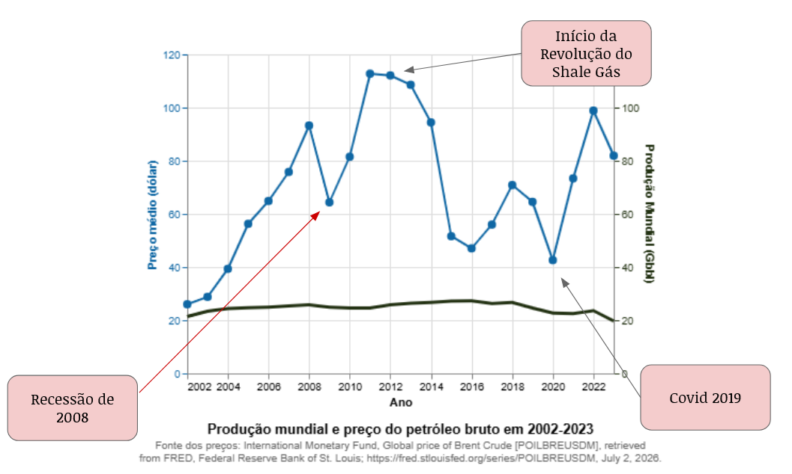
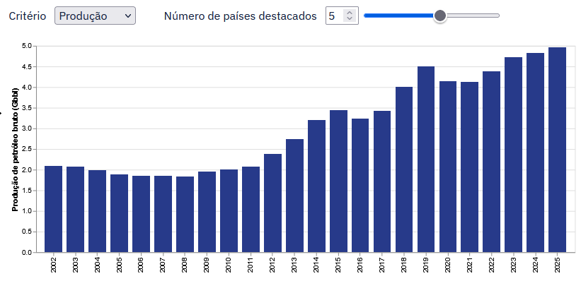
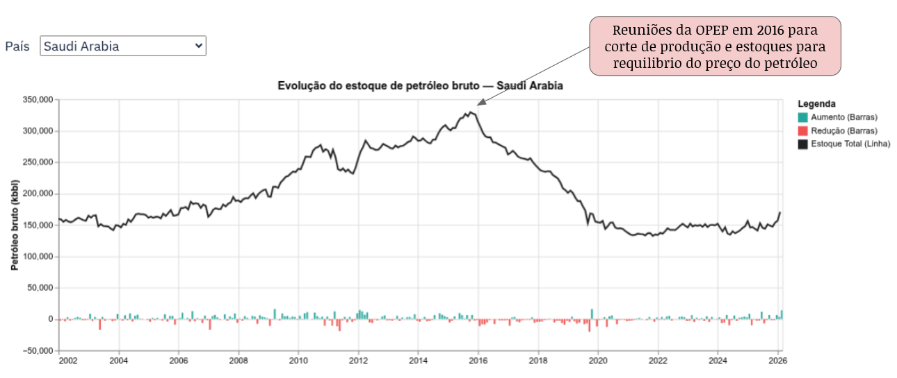
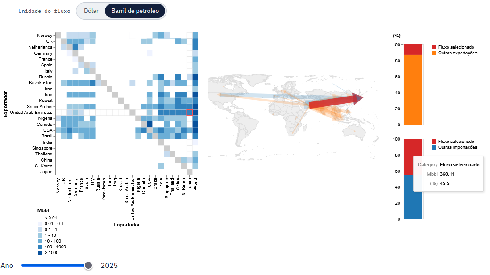

Visualizando a geopolítica do petróleo
Algumas percepções sobre a geopolítica do petróleo obtidas por análise visual.
A volatidade do preço versus a inelasticidade da produção mundial de petróleo bruto
Variações no preço de petróleo durante ou após eventos marcantes, como a Recessão de 2008, Revolução do Shale Gás (2012), e Pandemia de Covid 2019.
Apesar das variações de preço durante esse período, a produção de petróleo bruto manteve-se estável.


A revolução do gás de xisto nos EUA
2012: Maior aumento anual de produção de petróleo bruto pelos EUA até então.
2018: Crescimento anual recorde de ~17%.
“A Idade da Pedra não acabou porque o mundo ficou sem pedras, e a Era do Petróleo não terminará porque ficaremos sem petróleo.”- Don Huberts, Diretor Executivo da Shell Hydrogen, julho de 1999
O choque do petróleo em 2016
Acordos de corte de produção com países não-OPEP, dando a origem à OPEP+.

A fragilidade do Japão em conflitos no Oriente Médio
Em 2025, o Japão importou 335 milhões de barris de petróleo da Arábia Saudita, que correspondem a cerca de 42% das importações de petróleo bruto pelo Japão.
Considerando as exportações dos Emirados Árabes Unidos para o Japão, o valor é ainda maior: 360 milhões de barris de petróleo, que correspondem a cerca de 45% das importações de petróleo bruto pelo Japão.

Explore os dados você mesmo!